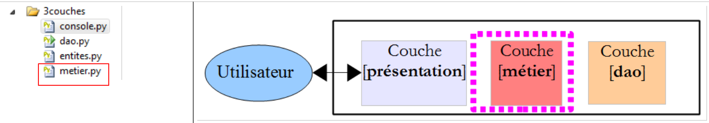

7. Layered architecture and interface-based programming
7.1. Introduction
We propose to write an application that displays the grades of middle school students. This application will have a multi-layer architecture:
 |
- The [presentation] layer is the layer that interacts with the application user.
- The [business logic] layer implements the application's business rules, such as calculating a salary or an invoice. This layer uses data from the user via the [presentation] layer and from the DBMS via the [DAO] layer.
- The [DAO] (Data Access Objects) layer manages access to data in the DBMS.
We will illustrate this architecture with a simple console application:
- there will be no database,
- the [DAO] layer will manage the Student, Class, Subject, and Grade entities to handle student grades,
- the [business logic] layer will calculate metrics based on a specific student’s grades,
- the [presentation] layer will be a console application that displays the results calculated by the [business] layer.
The Visual Studio project for the application is as follows:
 |
7.2. The application's entities
Entities are objects. Here, we will have four classes for each of the entities: Student, Class, Subject, and Grade.
 |
The [entities.py] file contains four classes.
The [Class] class represents a middle school class:
class Classe:
# constructeur
def __init__(self,id,nom):
# on mémorise les paramètres
self.id=id
self.nom=nom
# toString
def __str__(self):
return "Classe[{0},{1}]".format(self.id,self.nom)
- lines 3–6: a class is defined by an ID (line 5) and a name (line 6);
- lines 9-10: the method for displaying the class.
The [Subject] class is as follows:
class Matiere:
# constructeur
def __init__(self,id,nom,coefficient):
# on mémorise les paramètres
self.id=id
self.nom=nom
self.coefficient=coefficient
# toString
def __str__(self):
return "Matiere[{0},{1},{2}]".format(self.id,self.nom,self.coefficient)
- lines 3-7: a subject is defined by its ID (line 5), its name (line 6), and its weight (line 7);
- lines 10-11: the method for displaying the subject.
The [Student] class is as follows:
class Eleve:
# constructeur
def __init__(self,id,nom,prenom,classe):
# on mémorise les paramètres
self.id=id
self.nom=nom
self.prenom=prenom
self.classe=classe
# toString
def __str__(self):
return "Eleve[{0},{1},{2},{3}]".format(self.id,self.prenom,self.nom,self.classe)
- lines 3–8: a student is characterized by their ID (line 5), last name (line 6), first name (line 7), and class (line 8). This last parameter is a reference to a [Class] object;
- lines 11-12: the method for displaying the student.
The [Grade] class is as follows:
class Note:
# constructeur
def __init__(self,id,valeur,eleve,matiere):
# on mémorise les paramètres
self.id=id
self.valeur=valeur
self.eleve=eleve
self.matiere=matiere
# toString
def __str__(self):
return "Note[{0},{1},{2},{3}]".format(self.id,self.valeur,self.eleve,self.matiere)
- lines 3-8: a [Grade] object is characterized by its ID (line 5), the grade value (line 6), a reference to the student who received this grade (line 7), and a reference to the subject for which the grade was given (line 8);
- lines 11-12: the method for displaying the [Note] object.
7.3. The [dao] layer
 |
The [dao] layer will provide the following interface to the [business] layer:
- getClasses returns the list of middle school classes;
- getMatieres returns the list of subjects;
- getStudents returns the list of students;
- getGrades returns a list of grades.
The [business] layer will use only these methods. It does not need to know how they are implemented. This data can therefore come from various sources (hard-coded values, a database, text files, etc.) without affecting the [business] layer. This is known as interface-based programming.
The [Dao] class implements this interface as follows:
- line 4: we import the module containing the entities handled by the [DAO] layer;
- line 8: the constructor has no parameters. It hard-codes four lists:
- lines 10–12: the list of classes;
- lines 14–16: the list of subjects;
- lines 18–22: the list of students;
- lines 24–32: the list of grades.
- lines 39–52: the four methods of the [dao] layer interface simply return a reference to the four lists constructed by the constructor.
A test program might look like this:
The comments speak for themselves. Lines 11–24 use the [dao] layer interface. There are no assumptions here about the actual implementation of the layer. On line 8, we instantiate the [dao] layer. Here we make assumptions: class name and constructor type. There are solutions that allow us to avoid this dependency.
The results of running this script are as follows:
7.4. The [business] layer
 |
The [business] layer implements the following interface:
- getClasses returns the list of middle school classes;
- getMatieres returns the list of subjects;
- getStudents returns the list of students;
- getGrades returns a list of grades;
- getStatsForStudent returns the grades for student idStudent along with information about them: weighted average, lowest grade, highest grade.
The [presentation] layer will use only these methods. It does not need to know how they are implemented.
The getStatsForStudent method returns an object of type [StatsForStudent] as follows:
class StatsForEleve:
# constructeur
def __init__(self, eleve, notes):
# on mémorise les paramètres
self.eleve=eleve
self.notes=notes
# on s'arrête s'il n'y a pas de notes
if len(notes)==0:
return
# exploitation des notes
sommePonderee=0
sommeCoeff=0
self.max=-1
self.min=21
for note in notes:
valeur=note.valeur
coeff=note.matiere.coefficient
sommeCoeff+=coeff
sommePonderee+=valeur*coeff
if valeur<self.min:
self.min=valeur
if valeur>self.max:
self.max=valeur
# calcul de la moyenne de l'élève
self.moyennePonderee=float(sommePonderee)/sommeCoeff
# toString
def __str__(self):
# cas de l'élève sans notes
if len(self.notes)==0:
return "Eleve={0}, notes=[]".format(self.eleve)
# cas de l'élève avec notes
str=""
for note in self.notes:
str+="{0} ".format(note.valeur)
return "Eleve={0}, notes=[{1}], max={2}, min={3}, moyenne={4}".format(self.eleve, str, self.max, self.min, self.moyennePonderee)
- Line 3: The constructor takes two parameters:
- a reference to the student of type [Student] for whom metrics are calculated;
- a reference to their grades, a list of [Grade] objects.
- lines 8-9: if the list of grades is empty, we stop here.
- Otherwise, lines 11–25: the following metrics are calculated:
- self.weightedAverage: the student's average weighted by the subject coefficients;
- self.min: the student's lowest grade;
- self.max: the student's highest grade.
- line 28: the method for displaying the class in the format specified in line 36.
A test script for this class could be as follows:
The screen output is as follows:
Let’s return to our layered architecture:
 |
The [Business] class implements the [business] layer as follows:
class Metier:
# constructeur
def __init__(self,dao):
# on mémorise la référence sur la couche [dao]
self.dao=dao
#-----------
# interface
#-----------
# les indicateurs sur les notes
def getStatsForEleve(self,idEleve):
# Stats pour l'élève de n° idEleve
# recherche de l'élève
trouve=False
i=0
eleves=self.getEleves()
while not trouve and i<len(eleves):
trouve=eleves[i].id==idEleve
i+=1
# a-t-on trouvé ?
if not trouve:
raise RuntimeError("L'eleve [{0}] n'existe pas".format(idEleve))
else:
eleve=eleves[i-1]
# liste de toutes les notes
notes=[]
for note in self.getNotes():
# on ajoute à notes, toutes les notes de l'élève
if note.eleve.id==idEleve:
notes.append(note)
# on rend le résultat
return StatsForEleve(eleve,notes)
# la liste des classes
def getClasses(self):
return self.dao.getClasses()
# la liste des matières
def getMatieres(self):
return self.dao.getMatieres()
# la liste des élèves
def getEleves(self):
return self.dao.getEleves()
# la liste des notes
def getNotes(self):
return self.dao.getNotes()
- lines 3–5: the constructor receives a reference to the [dao] layer. The [business] layer must have this reference. Here, we provide it via its constructor. Other solutions are possible. In a horizontally represented layered architecture, each layer must have a reference to the layer to its right;
- lines 36-49: the methods getClasses, getSubjects, getStudents, and getGrades simply delegate the call to the methods of the same names in the [dao] layer;
- line 12: the getStatsForStudent method receives as a parameter the student ID for whom statistics are to be returned.
- line 17: the student will be searched for in the list of all students;
- lines 18–20: the search loop;
- line 23: if the student is not found, an exception is thrown;
- otherwise, line 25: the found student is stored;
- lines 28–31: we search through all the middle school grades for those belonging to the stored student;
- once they are found, the requested StatsForEleve object can be constructed.
7.5. The [console] layer
 |
The [console] layer is implemented by the following script:
- line 10: instantiation of both the [dao] and [business] layers. This is the only dependency our code has on the implementation of these layers;
- line 34: we use the interface of the [business] layer;
- Line 19: The strip method removes leading and trailing spaces from the string;
- line 20: break exits a loop;
- line 24: attempts to convert the entered string to a decimal integer;
- line 29:
okis true only if line 25 has been executed; - line 31: continue allows the loop to restart from the middle;
- line 34: calculation of indicators;
- line 35: catches the RuntimeError exception that may originate from the [business] layer.
Here is an example of execution: